Imkerversammlung im Oktober
19. Oktober 2026Am 19.10.2026 traf sich der Imkerverein Luisenburg um 18 Uhr im Vereinsheim am CJD. Themen waren neue Termine und Rückblicke sowie ein Ausblick auf das Leben und Imkern mit Vespa velutina.
Neues aus dem Verein
Am 19.10.2026 traf sich der Imkerverein Luisenburg um 18 Uhr im Vereinsheim am CJD. Themen waren neue Termine und Rückblicke sowie ein Ausblick auf das Leben und Imkern mit Vespa velutina.
Spätestens im Herbst 2027 ist eine Honigschulung mit Prüfung geplant. Sie findet im CJD statt, allerdings nur bei ausreichend Anmeldungen.
Anmeldung bei Juliane Berger: berger.juliane [at] gmx.de
Nun ist sie da! Im Frühjahr wurde eine Königin in der Zinse gefangen, seitdem ist dort Ruhe. In Bad Laasphe und Banfe gibt es Beflug. Alle, die sich an der Nestsuche beteiligen, helfen, die Belastung im nächsten Jahr zu verringern.
Das Thema geht alle Menschen an, wir Imker haben aber ein besonderes Eigeninteresse. Es wäre schön, wenn wir solidarisch an die Sache herangehen. Wem etwas auffällt, gerne eine Nachricht an berger.juliane [at] gmx.de.
Ab der Blüte der Salweide dürfen die Bienensachverständigen (BSV) wieder Futterkranzproben für das Faulbrut-Monitoring des Landesverbandes ziehen. Ende ist standardmäßig der 31. Juli. Mehr dazu unter Bienengesundheit.
Am 9.9.2023 veranstaltete der Kreisimkerverein Wittgenstein eine Schulung rund um Wachs: Einschmelzen, Klären, Mittelwände … Laut allen Beteiligten ein toller Tag und definitiv wiederholenswert.
Die drei Termine sind vorbei, und die Resonanz war gut. Wir danken der Referentin und den Gästen für die gelungenen Veranstaltungen.
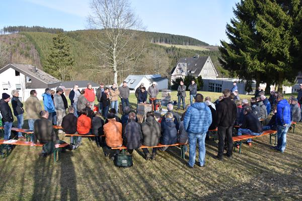
Neben dem Besuch beim Bienenvolk gab es auch Besuch von Wespen. So ließ sich gut der Unterschied zwischen den Insekten zeigen: Farbe, Flugverhalten, Nahrungsaufnahme …
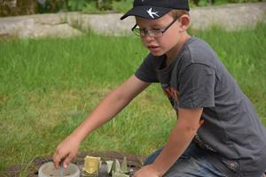
Zur Entspannung gab es drinnen einiges zu tun: Kerzen drehen, Honig schleudern und abfüllen, Etiketten gestalten und auf das Glas für zu Hause kleben. Mitgenommen wurden viel Wissen und Spaß, aber auch Kerzen, Saatkugeln und eine eigene „Zelle“.
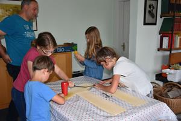
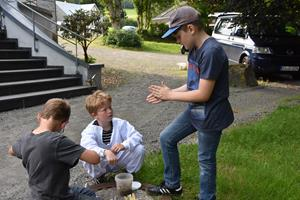
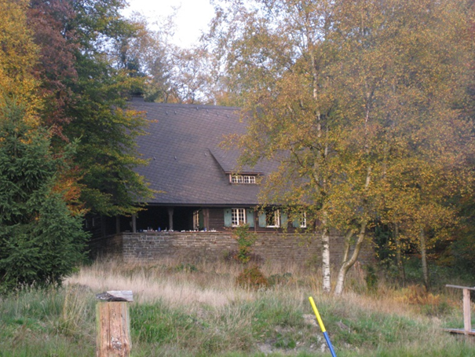
Liebe Imkerkolleginnen und -kollegen, unseren Kartoffelbraten des Kreisimkervereins Wittgenstein konnten wir mit vielen Gästen und Freunden bei super Wetter feiern. Vielen Dank für den Besuch.
Der Vorstand des Imkervereins Luisenburg
Unser Imkerverein wird erfreulicherweise immer „jünger“. Dennoch ist es gut und wichtig, „Altes“ dabei zu haben, um davon zu lernen. Als Dankeschön für langjährige Treue standen bei der letzten Versammlung Ehrungen an. Axel Schmidt und Werner Isenburg waren leider nicht anwesend, ihre Ehrung wird zu einem späteren Zeitpunkt nachgeholt. Anwesend war das ehemalige Vorstandsmitglied Hans Kaiser. Ihm wurde die Ehrenmitgliedschaft des Landesverbandes Westfälischer und Lippischer Imker zuteil. Im Gegenzug spendete der Ehrengast großzügig für die Jugendarbeit des Vereins – Geld, das gut gebraucht wird, denn im nächsten Jahr sind Schulungen für Nachwuchs jeder Art geplant.
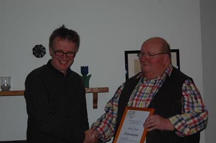
Wir danken dem Spender.
Das Angebot des Imkervereins Luisenburg nahmen 12 Kinder wahr, hauptsächlich aus der Edergemeinde. Nach einer gemeinsamen Einführungsrunde im Versammlungsraum ging es in zwei Gruppen weiter.
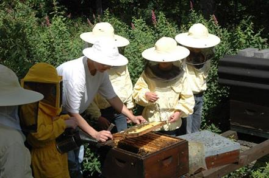
Während eine Gruppe mit Juliane Berger zu den Bienen ging, zeigte Olaf Kettler den Kindern, wie Rähmchen gebaut und für die Bienen vorbereitet werden.
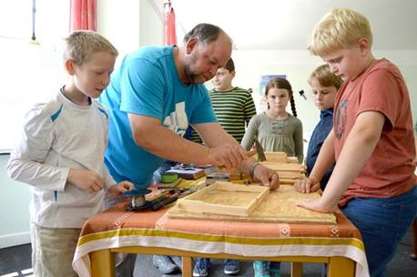
Anschließend trafen sich alle im Haus, um Honig abzufüllen und Kerzen zu kneten. Die zweieinhalb Stunden vergingen wie im Flug. Die Kinder durften zwei Bienenprodukte und viele Erkenntnisse über die Biene mit nach Hause nehmen.
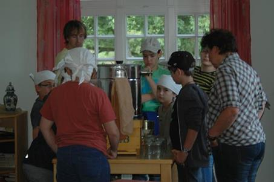
Am 13. Juni traf sich Hans Werner Wunderlich mit neun Jugendlichen aus Syrien und Afghanistan im Vereinsheim. Die jungen Männer wohnten auf dem CJD-Gelände und wollten sich die Bienen anschauen. Zusammen mit einem Dolmetscher erklärte der damalige Vereinsvorsitzende zunächst die Lebewesen und den Jahreslauf eines Bienenvolkes.
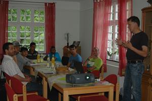
Danach ging es an die Bienen selbst. Auf dem Gelände des Jugenddorfes stehen zwei Völker. Eines wurde geöffnet, die Mutigsten schauten sich die Waben genau an und probierten auch den Honig. In den knapp zwei Stunden konnten erste Brücken gebaut werden.
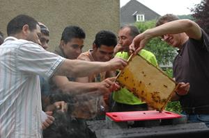
.jpg){kind=link}
.jpg){kind=link}
.jpg){kind=link}
.jpg){kind=link}

-01.jpg){kind=link}
.jpg){kind=link}

.jpg){kind=link}
.jpg){kind=link}
.jpg){kind=link}